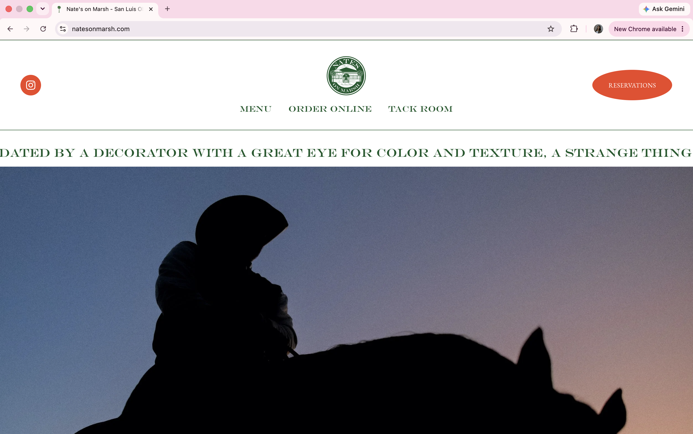
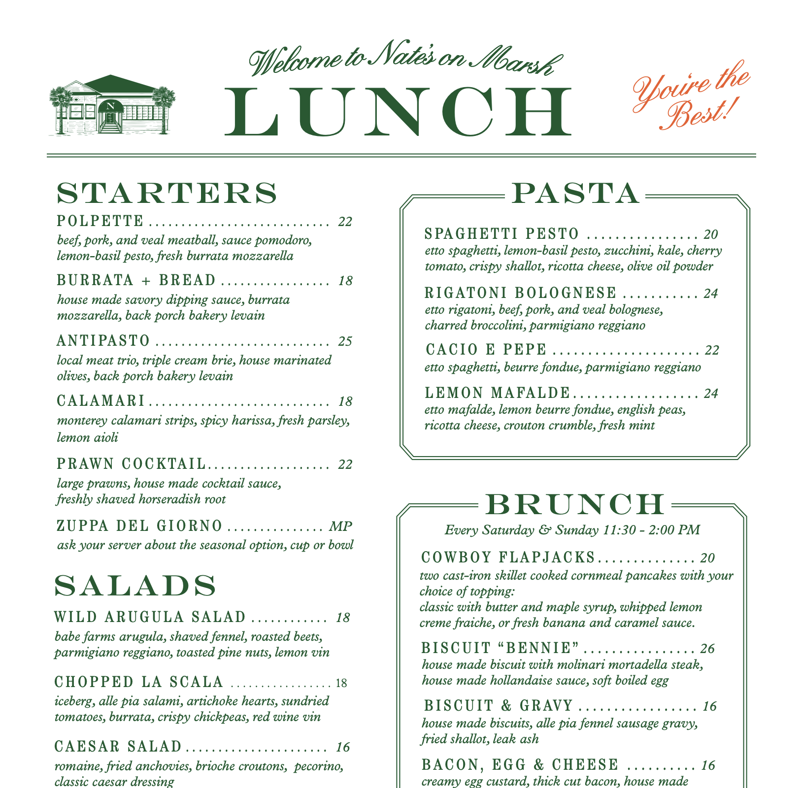
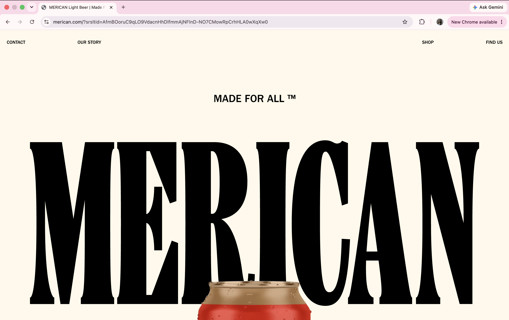
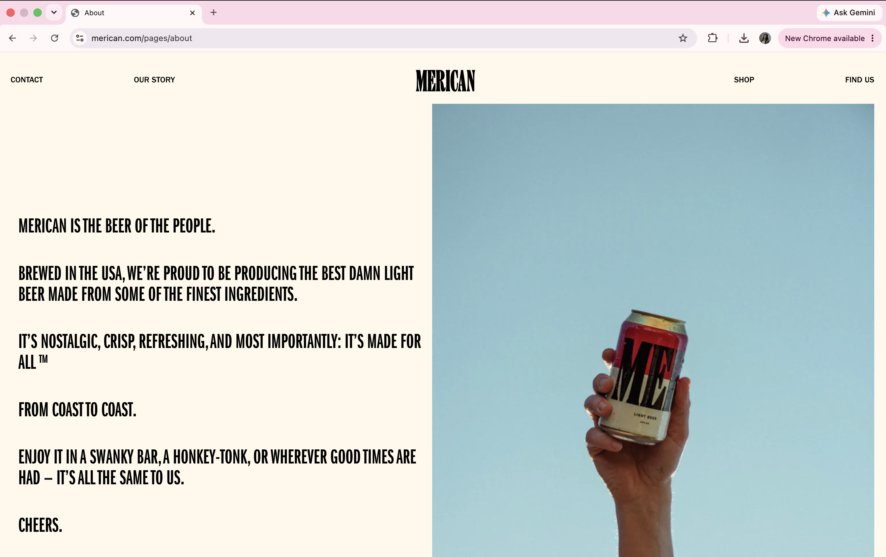
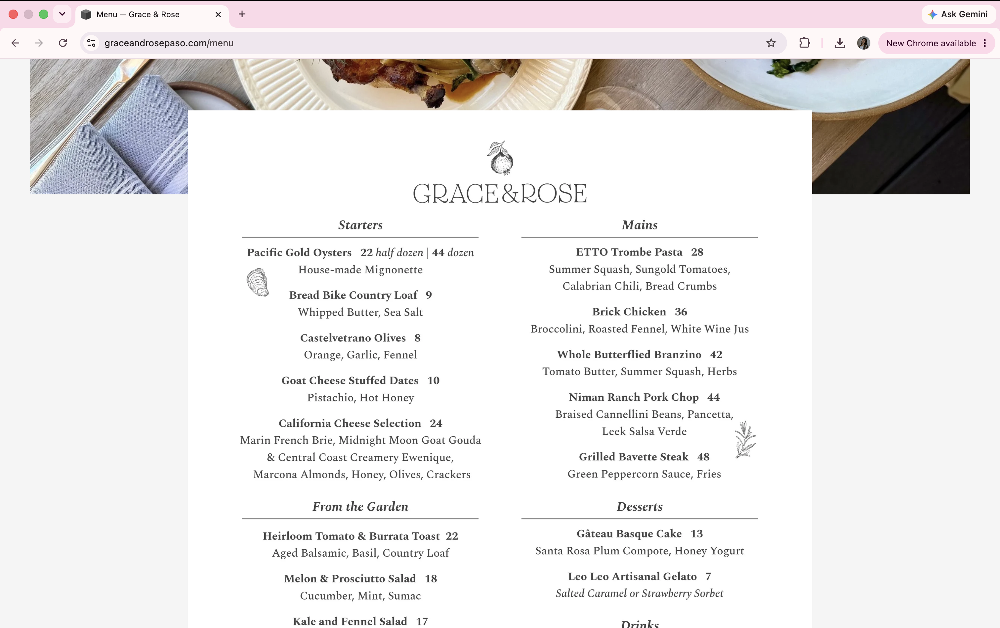

Final project proposal
Introduction
The Foothill
The Foothill is an independently owned Western restaurant with one location in San Luis Obispo, California. Inspired by the oak-covered hills, ranch roads, and relaxed pace of the Central Coast, the restaurant serves open-fire dishes, seasonal vegetables, sandwiches, handmade desserts, and carefully prepared drinks.
The restaurant presents a quiet and modern interpretation of Western California. Its identity will combine natural materials, confident typography, simple architecture, and colors drawn from the local landscape.
Target audience
The Foothill is intended for people who want a memorable meal in a place that feels relaxed, thoughtful, and connected to San Luis Obispo. They may be meeting friends, planning a date, celebrating with family, or looking for a restaurant that feels special.
Website visitors want to understand the restaurant before they arrive. Their main goals are to see the atmosphere, explore the menu, check prices, learn the restaurant’s story, and find its location and hours. The website should help them imagine the experience of eating at The Foothill and quickly decide whether it is the right place for their plans.
Comparative analysis
Nate’s on Marsh
Nate’s on Marsh creates a distinctive atmosphere through large equestrian photography, elegant green typography, centered navigation, and generous white space. I am especially interested in its dramatic image choices, oval buttons, and menu design because they make the restaurant feel confident and memorable.


Merican
Merican uses oversized lettering, a warm cream background, and a very small amount of navigation to create a bold first impression. I would like The Foothill to use a similar sense of scale, especially in page titles and opening statements, while keeping its own colors and identity.


Grace & Rose
Grace & Rose presents its physical location as an important part of the restaurant’s identity. The wide photograph of the farmhouse, simple black navigation, and restrained logo make the website feel calm and welcoming. This approach is useful for The Foothill because the building, landscape, and outdoor dining area should feel just as important as the food.


Website content
Home
The Foothill
Gather where the hills meet the table.
The Foothill is a neighborhood restaurant shaped by the landscape of San Luis Obispo. Our kitchen cooks over flame, follows the seasons, and lets simple ingredients speak for themselves. The menu moves between the ranch and the coast, bringing together grilled meats, local vegetables, warm bread, and delicious desserts.
Come for a late lunch beneath the oaks, dinner after sunset, or a long evening with people you have not seen in a while. There is no need to rush.
[Someone riding a horse crossing a pale blue hillside at dusk, shown as a dark silhouette against the sky.]
From the Central Coast
Our food is inspired by nearby farms, cattle ranches, oak wood fires, and the changing seasons of California’s Central Coast.
[A cream-colored table set outdoors beneath twisting oak trees and twinkle lights with olive-green napkins and simple glassware.]
Open fire, open door
The menu is prepared with care, but the experience remains easygoing. Guests can settle into a booth, sit near the open kitchen, or spend the evening outside beneath the lights.
[A chef's silhouette standing beside an open flame in a shadowed kitchen.]
About
The Foothill takes its name from the place where San Luis Obispo begins to rise from town into open land. It is the edge between streets and trails, between the everyday and the wide landscape beyond it.
The restaurant was imagined as a modern gathering place for that setting. Its design draws from ranch houses, old roadside restaurants, and the quiet colors of dry grass, blue morning light, dark oak leaves, and weathered stone. The result is Western in spirit.
The kitchen follows the same idea. Food is direct, carefully made, and meant to be shared. Meats are cooked over oak, vegetables are allowed to change with the season, and familiar dishes are given small details that make them feel personal to The Foothill.
More than anything, the restaurant is meant to feel like a place people return to. It should work for a quiet weekday dinner, a crowded table of friends, or a slow Sunday meal when no one is ready to leave.
[Fresh seasonal vegetables arranged in a woven basket.]
[A wide view through an open restaurant doorway toward blue hills, dry grass, and an empty road beyond the property.]
Menu
The menu at The Foothill is built around fire, seasonality, and familiar Central Coast ingredients. Dishes are generous and designed to work equally well for sharing or ordering individually.
From the fire
Oak-grilled steak
$28
Sliced beef with charred spring onions, crispy potatoes, and green peppercorn butter.
Half chicken
$24
Crisp-skinned chicken with roasted lemon, herbs, and warm bread to catch the pan juices.
Central Coast cheeseburger
$18
Griddled beef, aged cheddar, shredded lettuce, pickles, and house sauce on a toasted sesame bun.
From the field
Charred carrots and feta
$14
Fire-roasted carrots with whipped feta, toasted seeds, herbs, and a light chile glaze.
Ranch salad
$13
Crisp lettuce with avocado, shaved radish, toasted breadcrumbs, and ranch dressing.
Wood-fired mushrooms on toast
$16
Local mushrooms with garlic, soft herbs, and melted cheese over thick grilled sourdough.
For the table
Warm bread
$8
A small loaf served warm with cultured butter, sea salt, and local honey.
Olive oil cake
$10
Tender citrus cake with whipped cream, roasted strawberries, and a touch of sea salt.
Location
The Foothill
1234 Foothill Boulevard
San Luis Obispo, California 93405
Hours
Monday and Tuesday: Closed
Wednesday and Thursday: 4 p.m.–9 p.m.
Friday and Saturday: 11:30 a.m.–10 p.m.
Sunday: 11:30 a.m.–8 p.m.